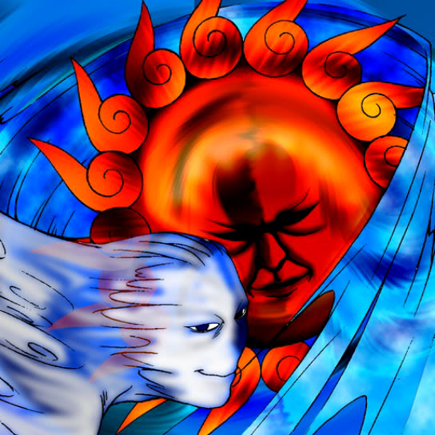

Ray & Temperature

Description: "Cancels all power increases or decreases of an enemy monster in battle. Does not cancel bonus effects such as terrain or Leader ability effects."
STATS
ATK: 1000
DEF: 1000DECK COST
Deck Cost per Card: 25EFFECT NOT IMPLEMENTED
Fusion List (10 Possible Fusions)
- Ray & Temperature + Fairywitch = Dark Witch
- Ray & Temperature + Dancing Elf = Dark Witch
- Ray & Temperature + Goddess with the Third Eye = Dark Witch
- Ray & Temperature + Key Mace = Dark Witch
- Ray & Temperature + Lady of Faith = Dark Witch
- Ray & Temperature + Lunar Queen Elzaim = Dark Witch
- Ray & Temperature + Mystical Elf = Dark Witch
- Ray & Temperature + Princess of Tsurugi = Dark Witch
- Ray & Temperature + Spirit of the Harp = Dark Witch
- Ray & Temperature + Waterdragon Fairy = Dark Witch